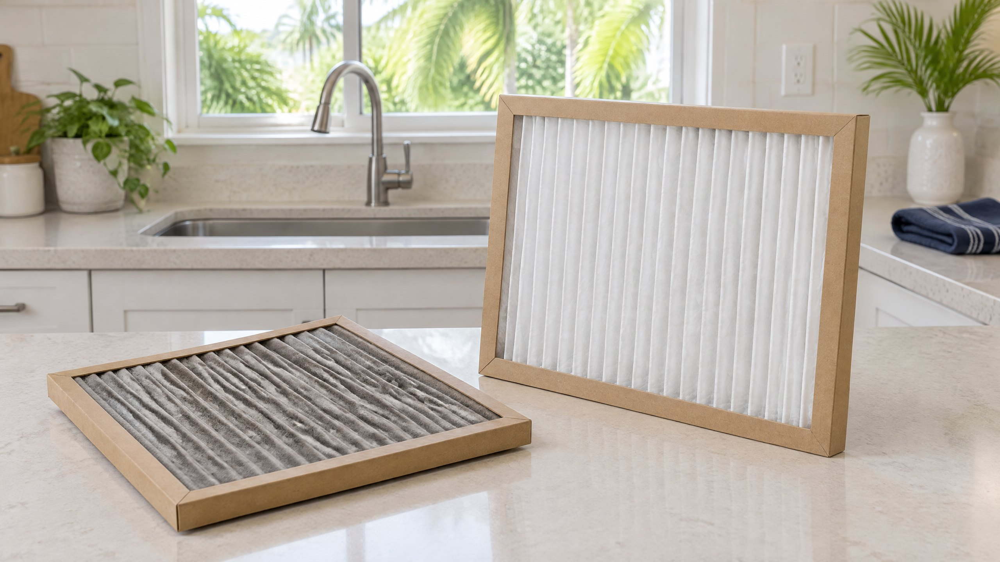

Disposable and washable describe different maintenance plans
A disposable filter is intended to be replaced when its service interval or condition calls for it. A washable filter is designed for maintenance and reuse according to its own instructions. The important distinction is the specified product, not whether its surface looks easy to rinse.
Trane's air-filter maintenance guide explicitly says disposable HVAC filters are not meant to be cleaned and reused. Its disposable-filter section specifically addresses washing and cautions that attempts to clean the filter can damage it. [3] That supports replacing an identified disposable filter, not declaring every pleated product disposable.
PNNL's Building America guidance likewise distinguishes disposing of spent filters from obtaining washable, reusable products appropriate to the equipment. [2] Buying a reusable design is a separate compatibility decision; it is not the same as washing a replacement-only filter already in your return.
Why does maintenance advice say inspect, clean or change?
ENERGY STAR uses the wording “Inspect, clean, or change air filters” in its homeowner maintenance checklist. [1] Those are alternative actions for the applicable installation, not three interchangeable ways to service every filter. A general checklist does not overrule a disposable product's replacement instructions.
Use that guidance to build an inspection habit, then follow the maintenance method for the actual filter. Do not turn an inspection reminder into a universal replacement deadline or assume every product lasts the same number of weeks. A filter's condition and the manufacturer's directions still matter.
For Tampa and North Tampa homeowners doing a routine filter change, the practical question is therefore straightforward: does the documentation call for a replacement element, or does it explicitly permit cleaning this element? If that is unclear, identify the product before experimenting with water.
Read the product instructions before using water
Check the filter's label, package, part number or manufacturer instructions for its maintenance classification. Words such as pleated or electrostatic are not a substitute for cleaning directions. Nor does a frame that feels sturdy establish that the media inside is washable.
Some systems have washable components, while others use replacement media. Trane gives separate cleaning guidance for certain reusable air-cleaner and Mini Split components; those directions are not instructions for a disposable central-HVAC filter. [3] Do not transfer a procedure from another appliance because the filter looks similar.
If the filter is confirmed washable, use the manufacturer's procedure, including drying and reinstallation requirements. This article does not prescribe a detergent, water pressure, drying time or cleaning technique for an unidentified product. If it is disposable, obtain the specified replacement instead.
What if you already washed the disposable filter?
Do not reinstall it simply because it has dried or looks cleaner. Drying is not permission to reuse a product whose instructions call for replacement. Trane's warning concerns the disposable filter's intended use and the possibility of damage during cleaning. [3] A photograph cannot establish that a washed filter still performs as specified.
Use a new compatible replacement and restore the equipment's documented filtration arrangement. If the frame or media was bent, torn or left damp, report that condition rather than trying another cleaning method. PNNL's guidance calls for prompt replacement when filters are damp, damaged or clogged. [2]
If the required filter is currently out, do not run the system unfiltered while waiting for the washed item to dry. Our article on removing the AC filter to improve cooling explains that separate workaround and why restoring filtration is different from diagnosing a cooling problem.
Choose the replacement without changing the system's design
A replacement should have the specified dimensions, depth and airflow compatibility. PNNL advises using replacement products whose resistance to airflow is appropriate for the HVAC equipment. [2] This is not an instruction to choose the strongest-looking filter or add a second one.
Our AC filter-selection guide covers fit and filtration ratings in more depth. Here, the maintenance decision remains narrow: replace a disposable element with a compatible product instead of trying to turn it into a washable one. A switch to a reusable product should be checked against the equipment requirements.
Follow the owner-approved procedure at an ordinary accessible filter location. PNNL directs that equipment not operate while filters are being replaced and that the airflow arrow, holder and restored grille or seals be addressed. [2] Do not open an equipment service panel, climb or enter an attic to follow a generic online example.
If the correct product or access arrangement is uncertain, ask about air filter replacement assistance. Keep the approved product information with your equipment records so the same question does not recur at the next change.
When is the concern more than filter maintenance?
A fresh filter does not explain recurring unexpected wetness, repair an airflow fault or establish that an AC is cooling normally. ENERGY STAR lists blower and coil care as professional maintenance tasks separate from the homeowner filter check. [1] Repeated washing is not a substitute for that equipment assessment.
Request AC repair assessment if weak cooling persists with the specified filter in place or the filter repeatedly becomes wet without a known maintenance reason. Report what changed, the installed product and whether washing was attempted. Our running-but-not-cooling checklist addresses the broader cooling symptom without assuming the filter is the only cause.
Frequently Asked Questions
Does a pleated or electrostatic label mean the filter is washable?
No. Those descriptions do not establish the product's cleaning instructions. Check its label and manufacturer documentation. The washing warning here applies to an identified disposable filter, not every product that has pleats.
Can I reuse a disposable filter once it dries after washing?
Drying does not change its replacement-only maintenance instructions. Use a new compatible replacement rather than assuming a clean-looking surface establishes performance. Report damage or persistent wetness if the equipment concern continues.
Does clean-or-change advice mean I can wash any AC filter?
No. General maintenance guidance covers different filter types. Use the action specified for the actual product: replacement for a disposable element, or the manufacturer's cleaning procedure for a confirmed washable component.
Can I use Mini Split filter-cleaning instructions for my central AC?
Not automatically. Directions for a named washable Mini Split component or reusable air-cleaner assembly do not apply to a disposable central-HVAC filter. Identify the product and follow its own maintenance instructions.
Editorial Source Review & Publisher
Published by On The Way Heating & Air. This local, family-rooted company uses federal, national-laboratory and manufacturer guidance to explain a filter-maintenance decision. It is not a product recommendation, health claim or inspection of your equipment. Follow the actual filter and system instructions and request help when compatibility or access is unclear.
Sources
- ENERGY STAR — Maintenance Checklist. General inspection, cleaning or replacement wording and separate professional blower and coil care; not permission to wash every filter.
- PNNL Building America Solution Center — High-MERV Filters. Spent versus washable filters, approved replacement fit and airflow resistance, handling and condition-based replacement. Numeric upgrade and interval examples are not universalized here.
- Trane — HVAC Air Filter Cleaning and Maintenance Guide. Explicit disposable-filter washing warning; cleaning directions for separately identified reusable components are not applied to disposable media.